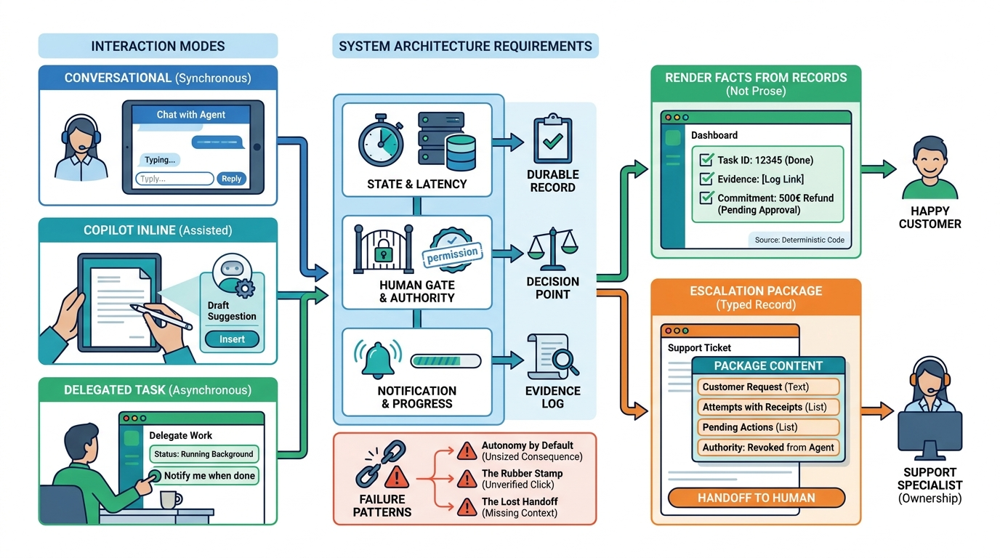

Part II — ARCHITECTURE: The Reference Architecture
Interaction Design for Agents: Chat, Delegation and Handoff to Humans
AI-assisted: written with Claude Code, images generated with the Gemini API. How this works

Image generated by Google Gemini (gemini-3-pro-image-preview)